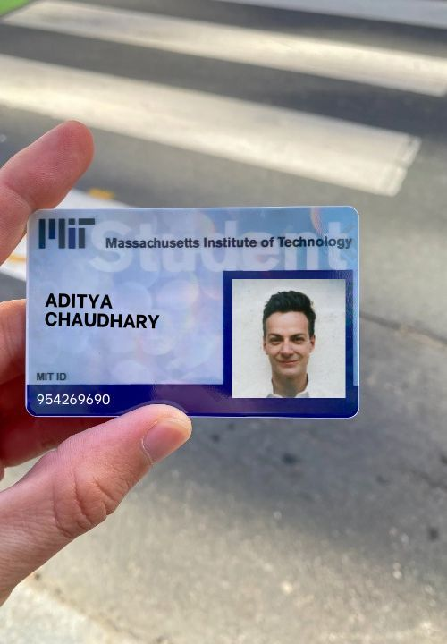
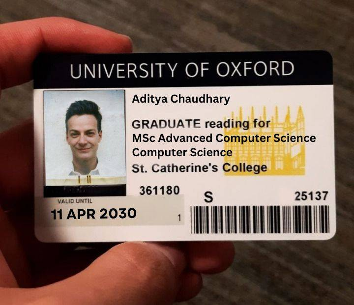
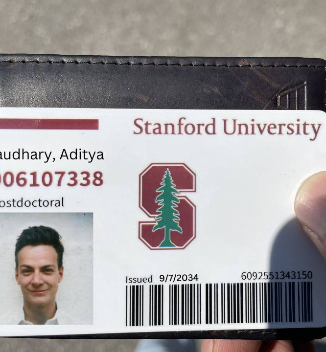
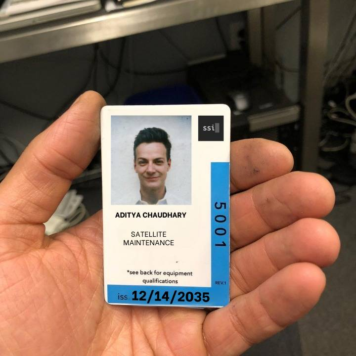

Milestones of My Life!!!
2005 - 2036 | #DontLookbackInAnger
2005 - Born.
2011 - Grade 1 in School.
2023 - Got out of the hellhole. (Graduated High School) Thank God.
2023-2024 - Took a gap year, explored projects.
2024 - Started Undergraduate Studies at MIT. Bachelor of Science in Mathematics with Computer Science.
2028 - Graduated from MIT.
2029 - Started Graduate Studies at Oxford. Master of Science in Advanced Computer Science.
2030 - Graduated from Oxford.
2031 - Went back to MIT for a PhD. Doctor of Philosophy in Computational Science and Engineering
2034 - Barely survived & somehow got a PhD.
2034 - Started postdoc at Stanford. Wanted to be near Silicon Valley and work in the industry; contribute to the ongoing superintelligence research.
2035 - Humanity achieves Superintelligence. Our team is taken to McDonald's to celebrate.
2035 - Personal problems; got fired. Became homeless for a while.
2035 - Got hooked up as maintenance worker for minimum wage. Applied for maintenance jobs in the Superintelligence sector. Finally promoted to satellite maintenance. Slightly above minimum wage, but residence access inside the satellite. Being an astronaut is not a big deal anymore since commercial space travel became so popular. Still, part of a childhood dream for me.
23/12/2035 - Reached the Superintelligence Inc. relay satellite part of the chainlink. This relays the access to the public model to the whole world. It's not the best option with all the latency and whatnot, but the data cables under the sea became redundant after the water & territorial wars of 2032, and now all the sanctions & everything.
01/01/2036 - Still in Space. Will be here for quite a while. Very lonely.
< Posts | No Data 2036 Onwards >